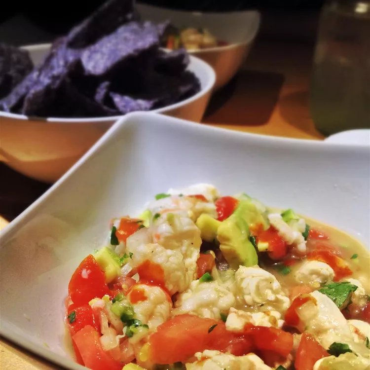

Jose's Shrimp Ceviche

Description
I've searched the web high and low, and have not found a shrimp ceviche recipe quite like this one!
My friends absolutely love it and beg me for the recipe! You can always double it for larger parties.
Serve it as a dip with tortilla chips or on a tostada spread with mayo. The fearless palate might like this with hot sauce.
Ingredients
- 1 pound peeled and deveined medium shrimp
- 1 cup fresh lime juice
- 10 plum tomatoes, diced
- 2 avocados, diced (Optional)
- 2 ribs celery, diced (Optional)
- 1 large yellow onion, diced
- 1 jalapeño pepper, seeded and minced, or to taste
- chopped fresh cilantro to taste
- salt and ground black pepper to taste
Steps
- Place shrimp in a large glass or other non-reactive bowl; cover with lime juice to
marinate (cook) until turn pink and opaque, about 10 minutes.
- Meanwhile, combine tomatoes, avocados, celery, onion, and jalapeño in a seperate large glass or other non-reactive bowl.
- Remove shrimp from lime juice; reserve juice.
Dice shrimp; add to bowl with vegetables. Add reserved lime juice and cilantro;
season with salt and black pepper. Toss gently to combine.